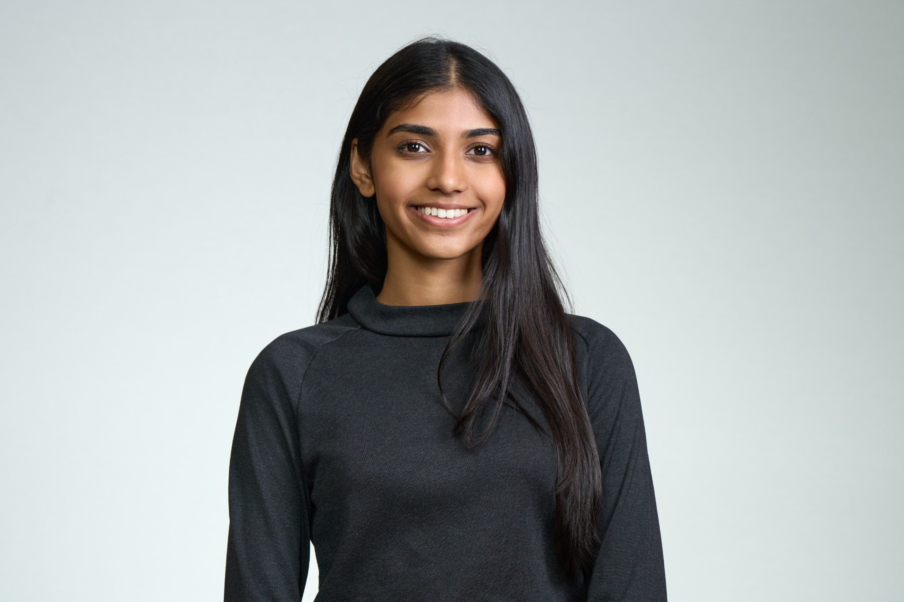

01
MediQ
A system designed to streamline and automate disjoint tasks in the patient discharge process in hospitals and clinics.
View repository ↗I’m Nishtha Ladi, a Computer Engineering student concentrating in Machine Learning. My work spans AI/ML, cloud systems, high-performance computing, health data, and software engineering.

01 / About
I’m a Computer Engineering student at Boston University with a concentration in Machine Learning. I enjoy building systems that connect research with practical applications, from autonomous cloud software workflows and HPC resource prediction to patient triage and health-data analysis.
Outside engineering, I care deeply about mentorship, community, sustainability, sports, and dance. I serve in leadership at BU’s Society of Women Engineers, tutor engineering students, and have spent years performing both Odissi and competitive Bollywood fusion.
02 / Projects
A system designed to streamline and automate disjoint tasks in the patient discharge process in hospitals and clinics.
View repository ↗An open-source benchmark framework for evaluating autonomous cloud software workflows through automated build, test, and repair pipelines.
View repository ↗A Tetris implementation centered on game logic, debugging, and systematic identification and repair of software defects.
View project ↗A collection of hands-on networking experiments exploring application-layer behavior, network protocols, packet captures, and communication across the Internet stack.
View repository ↗Research on high-performance computing workloads, including feature prediction and temporal resource-utilization analysis to support smarter allocation and safer job co-location.
View repository ↗A digital clock designed in Verilog, translating timing and display requirements into a working digital hardware design.
View project ↗An exploratory analysis of air-quality surveillance data focused on extracting patterns, interpreting measurements, and communicating findings through data visualization.
View analysis ↗An engineering design project developed from concept through final presentation and technical report, combining system design with iterative prototyping.
View presentation ↗A sensor-based engineering prototype built to measure temperature and demonstrate an end-to-end physical computing design.
View project ↗03 / Experience
Teach programming concepts and provide one-on-one tutoring across engineering subjects.
Developed a longitudinal machine-learning pipeline to analyze medication adherence and identify patients at risk for earlier detection and intervention.
Analyze temporal resource imbalance in HPC applications and develop models for smarter runtime resource allocation and safe job co-location.
Built automation for risk underwriting and KYC/KYB verification, extracting decision-making information from merchant onboarding documents.
04 / Leadership
Lead chapter initiatives, conference planning, and programming that supports women in engineering.
Mentored high school students and introduced them to Python programming and foundational AI/ML concepts.
Co-founded a sustainable-fashion initiative that upcycled 190 lbs of clothing, conserved 135,000+ liters of water, and was selected to present at the United Nations Headquarters.
05 / Beyond engineering
I’m classically trained in Odissi and have led BU Jalwa, Boston University’s competitive Bollywood fusion dance team. I’ve been recognized as Best Lead twice.